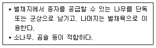
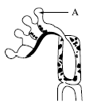
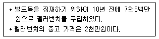
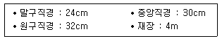
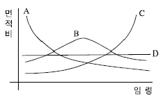
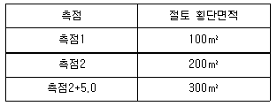
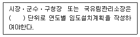

산림산업기사 (2020-08-22 기출문제)
1과목: 조림학
1. 가지치기 작업 시 부후의 위험성이 가장 높은 수종은?
- Cedrus deodara
- Pinus densiflora
- Abies holophylla
- Prunus serrulata
(정답률: 63%)

2. 접목 실시 방법에 대한 설명으로 옳은 것은?
- 접수와 대목이 활동을 시작할 때 실시한다.
- 접수와 대목이 휴면상태에 있을 때 실시한다.
- 접수는 활동을 시작하고 대목은 휴면상태일 때 실시한다.
- 접수는 휴면상태에 있고 대목이 활동을 시작할 때 실시한다.
(정답률: 66%)
3. 우세목을 간벌재로 이용하고자 할 때 적용하는 간벌 방법은?
- 하층간벌
- 수관간벌
- 택벌식 간벌
- 기계적 간벌
(정답률: 74%)
4. 광색소에서 파이토크롬에 대한 설명으로 옳지 않은 것은?
- 햇빛을 받으면 합성이 일부 금지되거나 파괴된다.
- 높은 광 조건에서 생장한 수목에서 많이 검출된다.
- 피를(Pyrrole) 4개가 모여서 이루어진 발색단을 가진다.
- 분자량이 120,000Da(Dalton)가량 되는 두 개의 동일한 폴리펩타이드로 구성되어있다.
(정답률: 66%)
5. 종자의 결실주기가 가장 긴 수종은?
- 소나무
- 오리나무
- 아까시나무
- 일본잎갈나무
(정답률: 66%)
6. 식물이 필요로 하는 필수원소 중에서 수목의 체내 이동이 상대적으로 어려운 원소는?
- 칼륨
- 칼슘
- 질소
- 마그네슘
(정답률: 66%)
7. 비료목으로 적합하지 않은 수종은?
- 싸 리
- 고로쇠나무
- 물오리나무
- 아까시나무
(정답률: 73%)
8. 종자 결실량을 증가시키는 방법이 아닌 것은?
- 간벌 작업을 실시한다.
- 건초, 접목, 상처주기 등의 스트레스를 준다.
- 꽃눈이 분화하는 시기에 비료를 주지 않는다.
- 수피의 일부분을 제거하여 C/N율을 조절한다.
(정답률: 74%)
9. 식재 간격을 2.4 × 2.4m 정방형으로 조림을 하고자 할 때에 1ha당 식재본수는?
- 약 1,800본
- 약 2,400본
- 약 3,000본
- 약 4,200본
(정답률: 71%)
10. 내음력이 가장 약한 수종은?
- 녹나무
- 전나무
- 자작나무
- 가문비나무
(정답률: 58%)
11. 산림 보육 작업에 해당되지 않는 것은?
- 제 벌
- 간 벌
- 개 벌
- 풀베기
(정답률: 67%)
12. 다음 설명에 해당하는 갱신 작업종은?

- 모수작업
- 개벌작업
- 택벌작업
- 중림작업
(정답률: 77%)
13. 수종별 파종 방법으로 적합하지 않은 것은?
- 소나무 - 산파
- 호두나무 - 산파
- 느티나무 - 조파
- 상수리나무 - 점파
(정답률: 70%)
14. 암수딴그루에 해당하는 수종은?
- 편백
- 소나무
- 벚나무
- 은행나무
(정답률: 77%)
15. 인공조림과 비교한 천연갱신에 대한 설명으로 옳지 않은 것은?
- 임지가 나출되지 않아 지력이 유지된다.
- 전문적인 육림기술이 필요하지만 벌목과 운재 작업은 용이하다.
- 임분 조성의 확실성이 결여되어 보완조림 등이 필요한 경우가 있다.
- 치수가 모수의 보호를 받고, 여러 가지 위해에 대한 저항력이 강하다.
(정답률: 74%)
16. 종자 검사 항목에 대한 설명으로 옳지 않은 것은?
- 효율은 발아율과 순량률을 곱한 값이다.
- 순량률은 순정종자무게를 전체시료무게로 나눈 값이다.
- 용적중은 100mL에 대한 무게를 그램 단위로 나타낸 것이다.
- 소립종자의 실중은 1,000립의 무게를 4번 반복하여 측정한 값의 평균치로 한다.
(정답률: 63%)
17. 중림작업에 대한 설명으로 옳지 않은 것은?
- 교림작업과 왜림작업을 혼합한 갱신작업이다.
- 일반적으로 하층임분은 개벌에 의한 맹아갱신을 반복한다.
- 동일 임지에서 일반용재와 신탄재 등을 동시에 생산하는 것을 목적으로 한다.
- 하층목은 양수 수종, 상층목은 지하고가 높고 수관의 틈이 많은 음수 수종이 적합하다.
(정답률: 67%)
18. 뿌리의 내피에 발달한 카스페리안대(Casparian Strip)의 역할에 대한 설명으로 옳은 것은?
- 뿌리털을 통해 흡수한 물의 이동을 효율적으로 차단하는 역할을 한다.
- 뿌리털을 통한 물의 흡수를 촉진하는 역할을 한다.
- 뿌리털을 통해 흡수한 물에 녹아있는 무기양료를 모아서 보관하는 역할을 한다.
- 뿌리털을 통해 흡수한 물에 녹아있는 무기양료만 통과시키는 거름종이 역할을 한다.
(정답률: 62%)
19. 종자 또는 삽목에 의해 시작된 숲으로 주로 높은수고의 수목으로 이루어진 숲은?
- 교림
- 왜림
- 중림
- 죽림
(정답률: 76%)
20. 리기다소나무에 대한 설명으로 옳지 않은 것은?
- 맹아력이 약하다.
- 잎은 3개씩 나오고 비틀린다.
- 소나무에 비해 송충이 피해가 적다.
- 사방 조림 수종으로 사용할 수있다.
(정답률: 67%)
2과목: 산림보호학
21. 밤나무 줄기마름병 방제 방법으로 옳지 않은 것은?
- 저항성 품종인 옥광 등을 식재한다.
- 배수가 잘되는 토양에 건전한 묘목을 심는다.
- 천공성 해충류의 피해가 없도록 살충제를 살포한다.
- 초기의 병반이 발생했을 때는 병든 부분을 도려내고 소독한 후 도포제를 바른다.
(정답률: 56%)
22. 밤을 가해하는 종실 해충은?
- 복숭아명나방
- 붉은매미나방
- 버들재주나방
- 벚나무모시나방
(정답률: 73%)
23. 숲에 군집하여 수목을 고사시키는 조류가 아닌 것은?
- 백로
- 왜가리
- 딱따구리
- 가마우지
(정답률: 65%)
24. 모잘록병 방제 방법으로 옳지 않은 것은?
- 파종상에서는 토양 소독을 한다.
- 묘상이 과습하지 않도록 주의한다.
- 토양의 산도가 염기성이 되도록 한다.
- 질소질 비료보다 인산, 칼륨질 비료를 더 많이 준다.
(정답률: 66%)
25. 해충의 생물적 방제 방법에 대한 설명으로 옳지 않은 것은?
- 친환경적인 방법으로 생태계가 안정된다.
- 해충밀도가 낮을 경우에도 효과를 거둘 수 있다.
- 화학적 방제 방법에 비해 방제 효과가 영속성을 지닌다.
- 해충밀도가 위험한 밀도에 달하였을 때 더욱 효과적이다.
(정답률: 69%)
26. 번데기로 월동하는 해충은?
- 매미나방
- 박쥐나방
- 차독나방
- 미국흰불나방
(정답률: 71%)
27. 잣나무 털녹병의 중간기주는?
- 송이풀
- 황벽나무
- 등골나물
- 일본잎갈나무
(정답률: 73%)
28. 소나무재선충을 매개하는 해충은?
- 왕바구미
- 소나무좀
- 북방수염하늘소
- 썩덩나무노린재
(정답률: 75%)
29. 미국흰불나방은 1년에 몇 회 발생하는가?
- 1회
- 2~3회
- 4~5회
- 6~8회
(정답률: 75%)
30. 완전변태를 하는 내시류에 속하는 곤충목은?
- 파리목
- 메뚜기목
- 흰개미목
- 잠자리목
(정답률: 63%)
31. 뽕나무 오갈병의 원인이 되는 병원체는
- 세균
- 곰팡이
- 바이러스
- 파이토플라스마
(정답률: 71%)
32. 병원생물 중 Basillus thuringiensis는 주로 어느 해충을 방제하는데 사용되는가?
- 나비류 유충
- 소나무좀 성충
- 솔수염하늘소 번데기
- 솔껍질깍지벌레 후약충
(정답률: 55%)
33. 성충 및 유충 모두가 수목을 가해하는 것은?
- 솔나방
- 솔잎혹파리
- 황다리독나방
- 오리나무잎벌레
(정답률: 68%)
34. 소나무 재선충병 방제 방법으로 옳지 않은 것은?
- 감염된 수목은 벌채 후 소각한다.
- 밀생 임분은 간벌을 하여 쇠약목이 없도록 한다.
- 포스티아제이트 액제를 이용한 토양 관주를 한다.
- 매개충의 우화 최성기에 나무주사를 실시한다.
(정답률: 60%)
35. 지표화로부터 연소되는 경우가 많고, 나무의 공동부가 굴뚝과 같은 작용을 하는 산불의 종류는?
- 수관화
- 수간화
- 지상화
- 지중화
(정답률: 67%)
36. 솔잎혹파리 방제를 위한 나무주사용 약제는?
- 디밀린 수화제
- 헥사코나졸 유제
- 디플루벤주론 액상수화제
- 이미다클로프리드 분산성액제
(정답률: 59%)
37. 잣나무 잎떨림병 방제 방법으로 가장 효과가 약한 것은?
- 풀베기와 가지치기를 실시한다.
- 2차 감염 방지를 위해 토양 소독을 철저히 한다.
- 비배관리를 잘하고 병든 잎은 모두 모아서 태운다.
- 자낭포자가 비산하는 시기에 적합한 약재를 살포한다.
(정답률: 56%)
38. 약제의 유효성분을 가스 상태로 하여 해충의 기문을 통하여 호흡기에 침입시켜 사망시키는 것은?
- 훈증제
- 제충제
- 소화중독제
- 침투성 살충제
(정답률: 72%)
39. 볕데기가 잘 발생하지 않는 수종은?
- 호두나무
- 굴참나무
- 오동나무
- 가문비나무
(정답률: 68%)
40. 포플러 잎녹병균의 유성포자 형성을 나타낸 다음 그림에서 A에 해당하는 명칭은?

- 녹포자
- 담자포자
- 여름포자
- 겨울포자
(정답률: 67%)
3과목: 임업경영학
41. 다음 조건에서 정액법에 의한 감가상각비는?

- 20만원/년
- 55만원/년
- 200만원/년
- 550만원/년
(정답률: 76%)
42. 다음 조건에서 스말리안식에 의한 재적은?

- 약 0.2317m3
- 약 0.2512m3
- 약 0.2617m3
- 약 0.3021m3
(정답률: 60%)
43. 정리기에 대한 설명으로 옳은 것은?
- 불법정인 영급관계를 법정인 영급으로 개량하는 기간이다.
- 산벌작업에서 예비벌을 시작하여 후벌을 마칠때까지의 기간이다.
- 보속작업에서 한 작업급에 속하는 모든 임분을 일순벌하는데 필요한 기간이다.
- 벌구식 택벌작업에서 맨 처음 택벌한 구역을 또다시 택벌하는데 필요한 기간이다.
(정답률: 56%)
44. 임지가격의 결정 방법으로 옳지 않은 것은?
- 자산가에 의한 방법
- 매매가에 의한 방법
- 기망가에 의한 방법
- 비용가에 의한 방법
(정답률: 64%)
45. 임업 자산 중 유동자산이 아닌 것은?
- 임도
- 묘목
- 비료
- 미처분 임산물
(정답률: 76%)
46. 공유림에 대한 설명으로 옳지 않은 것은?
- 공공복지 증진을 목적으로 한다.
- 경영기관의 재정수입 확보에 기여하여야 한다.
- 사유림보다는 1ha당 평균축적이 적은편이다.
- 모범적인 산림경영으로 사유림 경영의 시범이 되어야한다.
(정답률: 54%)
47. 산림경영계획 수립 시 소반구획을 달리하는 경우에 속하지 않는 것은?
- 지종이 상이할 때
- 작업종이 상이할 때
- 지위, 지리가 상이할 때
- 임종, 경급이 상이할 때
(정답률: 44%)
48. 산림경영계획 수립을 위한 임황조사에 대한 설명으로 옳지 않은 것은?
- 혼효림의 경우는 5종까지 주요 수종을 조사할 수 있다.
- 가슴높이지름 6cm 이상의 입목을 측정하여 총 축적을 산정한다.
- 인공 조림지에서는 조림년도를 아는 경우에도 측정 대상의 입목에 생장추를 이용하여 임령을 산정한다.
- 임분 수고의 최저, 최고 및 평균을 측정하여 임분 수고의 범위를 분모로 하고 평균 수고를 분자로 하여 표시한다.
(정답률: 51%)
49. 이상적인 임분의 ha당 재적이 30m3이고, 현실 임분의 ha당 재적이 15m3이라면 임분의 입목 도는?
- 0.1
- 0.5
- 1
- 2
(정답률: 66%)
50. 감가가 발생하는 요인 중 물리적 감가에 해당되는 것은?
- 부적응에 의한 감가
- 진부화에 의한 감가
- 경제적 요인에 의한 감가
- 마모 및 손상에 의한 감가
(정답률: 78%)
51. 임업경영의 성과분석에 대한 설명으로 옳지 않은 것은?
- 임가소득, 임업소득, 임업순수익 등으로 파악 할 수 있다.
- 임업소득은 임업조수익에서 임업경영비를 뺀 나머지를 말한다.
- 짧은 기간 동안의 성과는 명확하게 계산할 수 없는 경우가 많다.
- 임가소득으로 서로 다른 임가 사이의 경영성과에 대하여 직접 비교가 용이하다.
(정답률: 55%)
52. 산림평가에서 복리산 공식에 해당되지 않는 것은?
- 중가 계산식
- 전가 계산식
- 무한이자 계산식
- 유한이자 계산식
(정답률: 51%)
53. 전체 임분을 본수가 같은 몇 개의 계급으로 나누고, 각 계급에서 같은 수의 표준목을 선정하여 임목 재적을 계산하는 방법은?
- 단급법
- Urich법
- Hartig법
- Draudt법
(정답률: 67%)
54. 산림평가에 대한 설명으로 옳지 않은 것은?
- 임도⋅저목장⋅건물 등 임지 안의 시설에 대하여 평가한다.
- 임지 안의 동물⋅토석⋅광물 등에 대하여는 평가하지 않는다.
- 산림의 공익적 기능은 종류별로 분류하여 계량평가를 한다.
- 임지는 자연적 요소, 지위 및 지리별 입목지⋅벌채적지⋅미립목지⋅시설부지⋅암석지⋅지소 등으로 나누어 평가한다.
(정답률: 69%)
55. 우리나라의 경우 흉고직경은 입목의 지상 몇 미터 높이에서 측정하는가?
- 0.5m
- 1.0m
- 1.2m
- 1.5m
(정답률: 76%)
56. 다음 그림에서 보속 생산이 가능한 형태의 산림 구성은?

- A형
- B형
- C형
- D형
(정답률: 66%)
57. 임업경영의 지도 원칙이 아닌 것은?
- 공정성의 원칙
- 경제성의 원칙
- 수익성의 원칙
- 보속성의 원칙
(정답률: 69%)
58. 수확조정 방법 중 법정축적법에 대한 설명으로 옳은 것은?
- 교차법, 임분경제법, 등면적법 등이 있다.
- 법정축적에 도달하도록 하는 수식법이다.
- 수확량을 산출하고 벌채장소를 규정한다.
- 수확량을 기초로 생장량을 예측하는 협의의 생장량법이다.
(정답률: 55%)
59. 생장의 종류를 수목의 생장에 따른 분류와 임목의 부분에 따른 분류가 있을 때, 수목의 생장에 따른 분류에 속하지 않는 것은?
- 재적생장
- 형질생장
- 수고생장
- 등귀생장
(정답률: 36%)
60. 유령림의 임목 평가방법으로 임목가격의 최저 한도액을 이용하는 것은?
- 원가법
- 매매가법
- 비용가법
- 시장가역산법
(정답률: 60%)
4과목: 산림공학
61. 통나무의 길이가 16m, 임도의 노폭은 4m인 경우 임도의 최소곡선반지름은?
- 4m
- 8m
- 12m
- 16m
(정답률: 60%)
62. 가선 집재와 비교한 트랙터 집재에 대한 설명으로 옳지 않은 것은?
- 작업비가 절약된다.
- 작업생산성이 높다.
- 급경사지에서도 가능하다.
- 기동성이 있고 탄력적으로 작업할 수 있다.
(정답률: 74%)
63. 임도가 가장 이상적으로 배치되었을 경우에 개발지수는?
- 0
- 1
- 10
- 100
(정답률: 65%)
64. 암반 비탈면의 녹화 조성에 가장 효과가 작은 것은?
- 새집공법
- 차폐수벽공
- 분사식씨뿌리기
- 종비토뿜어붙이기
(정답률: 53%)
65. 생성 원인이 다른 암석은?
- 편마암
- 화강암
- 안산암
- 현무암
(정답률: 52%)
66. 임도 설치를 위한 현지측량 결과가 다음과 같을 때 전체 구간에서 절토량은?

- 2,750m3
- 4,250m3
- 6,750m3
- 8,000m3
(정답률: 45%)
67. 1 : 25,000 지형도에서 임도의 종단기울기 8%의 노선을 긋고자 할 때, 도면상에 표시되는 주곡선간의 길이는?
- 0.5mm
- 1mm
- 5mm
- 10mm
(정답률: 52%)
68. 비탈다듬기 또는 단끊기에 의하여 발생한 토사를 산복의 깊은 곳에 넣어 고정 및 유지시키며 침식을 방지하고자 시공하는 것은?
- 땅속흙막이
- 산복수로공
- 비탈힘줄박기
- 산비탈 흙막이
(정답률: 63%)
69. 목재수확작업에 주로 사용되는 와이어로프의 스트랜드의 수는?
- 3
- 4
- 5
- 6
(정답률: 60%)
70. 산지사방에서 편책공 및 목책공에 대한 설명으로 옳지 않은 것은?
- 토사 유출 방지를 목적으로 시공한다.
- 한번 시설하면 영구적으로 사용할 수 있다.
- 통나무를 이용하여 흙막이를 한 것을 목책공이라 한다.
- 말뚝을 박고 섶가지 등을 엮어서 흙막이를 한것을 편책공이라 한다.
(정답률: 76%)
71. 상하 소단간의 경사거리가 길고 경사가 급하여 토사 유실이 예상되는 산지의 안정과 녹화에 가장 적합한 공법은?
- 떼단쌓기
- 줄떼다지기
- 평떼붙이기
- 선떼붙이기
(정답률: 43%)
72. 롤러의 표면에 돌기를 만들어 부착한 것은?
- 탬핑롤러
- 탠덤롤러
- 진동롤러
- 머캐덤롤러
(정답률: 66%)
73. 다음 ( )안에 내용으로 옳은 것은?

- 1년
- 2년
- 5년
- 10년
(정답률: 64%)
74. 돌을 쌓는 방법에 따른 공법의 종류에 해당되지 않는 것은?
- 덧쌓기 공법
- 메쌓기 공법
- 찰쌓기 공법
- 켜쌓기 공법
(정답률: 63%)
75. 콘크리트의 강도에 대한 설명으로 옳은 것은?
- 인장강도가 압축강도보다 크다.
- 전단강도가 압축강도보다 크다.
- 압축강도와 인장강도가 비슷하다.
- 인장강도와 전단강도는 비슷하다.
(정답률: 47%)
76. 해안사방에서 모래언덕 조성방법에 속하지 않는 것은?(오류 신고가 접수된 문제입니다. 반드시 정답과 해설을 확인하시기 바랍니다.)
- 모래덮기
- 파도막이
- 퇴사울세우기
- 정사울세우기
(정답률: 50%)
77. 소실수량(증발산량)에 대한 설명으로 옳은 것은?
- 강수량에서 유출량을 뺀 값이다.
- 유출량에서 강수량을 뺀 값이다.
- 강수량과 유출량을 합한 값이다.
- 강수량과 유출량을 곱한 값이다.
(정답률: 68%)
78. 임도 노면의 유지보수에 대한 설명으로 옳지 않은 것은?
- 약화된 노체의 지지력을 보강한다.
- 노면에 생긴 바퀴 자국이나 골을 없앤다.
- 길어깨가 노면보다 높으면 깎아내고 다진다.
- 노면 정제는 습윤한 상태보다 건조한 상태에서 실시하는 것이 좋다.
(정답률: 71%)
79. 임도에서 각 측점의 절성토 높이 및 지장목 제거 등의 물량을 산출하기 위한 내용이 기입된 설계도는?
- 평면도
- 횡단면도
- 구조물도
- 도로표준도
(정답률: 56%)
80. 하베스터가 수행하는 주요 작업에 대한 설명으로 옳은 것은?
- 벌도작업만 가능하다.
- 조재작업만 가능하다.
- 벌도 및 조재작업이 가능하다.
- 벌도 및 가선 집재 작업이 가능하다.
(정답률: 64%)